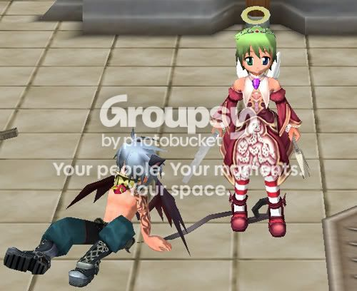

หน้า 123 จากทั้งหมด 276

โพสต์แล้ว:
พฤหัสฯ. 01 พ.ค. 2008 3:30 pmโดย ECO
ผมอัพ เอจินะครับ
ชาวนาผม อ่ะ
ว่าจะลดเต้งมาเยอะๆ ให้พอตีตายพอ แต่เอาวิทกะ เอจิให้สูง
เพราะถ้าเอจิน้อยร่ายระเบิดทรายเปนวันเลย
แต่เด๋ว 50 ค่อยทำ T^T อีกนานมาก
โพสต์แล้ว:
พฤหัสฯ. 01 พ.ค. 2008 6:22 pmโดย ECO
montai เขียน:อยากทราบว่าจะอัพ สกิลอะไรบ้าง ตอนเปง ฟามเมอร์
ขอตั้งแต่ จ๊อบ 1 -50 เลย ว่าอัพอะไรบ้างและอัพเวลอะไร
ขอบคุณน๊ะ ~ * ตอบเรวๆน๊ะ
อัพแบบผมมั้ยครับ ไม่เน้นเก็บเวล อัพแต่สกิลทำของ 8)
Cultivation 1 ปลูกต้นไม้
Plant Knowledge 1 ไว้หาของ
Tree Knowledge 1 ไว้หาของ
Blow 5 ไว้ตีมอน
Cooking 5 ทำอาหาร
Wood Create 3 ทำของแต่งบ้าน
Item Refine 3 ทำของ
Gardening 3 ทำสวน
Sewing Create 5 ทำชุด
Sewing Kit 5 ทำที่ซ่อมชุด
Healling Tree 5 ไว้เพิ่มพลัง
มั่วดีม่ะ :twisted:
ดวลกับจับกังหมามะ :3
skill คล้ายกันแต่ยังไม่มี kit
alchemist - drug create
marionest - marionette mastery, marionette create, create figure (โอนเรียบร้อย)
เสียดายไม่มี mechine create, highly refine :lol: (ไม่เป็นไร BS ทำแทนตรงนี้ละ)
โพสต์แล้ว:
พฤหัสฯ. 01 พ.ค. 2008 11:22 pmโดย ECO
เหอๆ ทางนี้มีแต่สกิลทำของล้วนๆ สู้ไม่มี...
ไปลองเช็คสีผมจากในมอลล์มา...

รู้สึกยังไม่ใกล้เคียงแฮะ...
ลองใส่ชุดมาริโอเนส ไม่เข้ากับผมสั้นจริงๆ- -" รอซื้อบัตรเติมเงิน แต่ไม่มีโปรโมชั่นที่น่าเติมเลย...

โพสต์แล้ว:
ศุกร์ 02 พ.ค. 2008 12:57 amโดย ECO
อยากไปเวลจะแย่แร้ว รอๆๆ
โพสต์แล้ว:
ศุกร์ 02 พ.ค. 2008 3:24 amโดย ECO
ฟาร์มเมอร์คนไหนใจดี
พาผมไปดูดด้วยยยย ><
:oops:
โพสต์แล้ว:
ศุกร์ 02 พ.ค. 2008 8:14 amโดย ECO
วิธีเก็บเลเวล - ดูดเพื่อน - ส่งเควส...
ยังดีที่สามารถตบปุรุรุตายได้ แต่เมื่อวานไม่ได้ไปร่วมวงในเพนียดช้างกับเพื่อน เห็นว่าเลเวลอัพเร็วมาก แต่จ๊อบอืด...
โพสต์แล้ว:
ศุกร์ 02 พ.ค. 2008 9:45 amโดย ECO
อ๊ากกกกก เพื่อนๆ ชาวนาครับ!!!!
อยากโดดสะพานปลาที่หอแสงตายให้จมน้ำตายครับ!!!
ทำเควสชุด 65 แล้วเสือกเปิดได้เสื้อ 2 ตัว (จำผิด...)
ใครสนใจ ติดต่อได้ครับ
20~25k พอ(จะให้ราคาเท่าไรก็แล้วแต่ในช่วงราคาดังกล่าว)
subsonic serv. Moji ครับ...
ปล.ไปตีไอ้กระต่ายเวงต่อ...
edit โทดครับๆ เสื้อผู้ชายครับ
โพสต์แล้ว:
ศุกร์ 02 พ.ค. 2008 10:54 amโดย ECO
เสื้อเพศหญิงรึเปล่าครับ (มันแยกเพศป่าวหว่า จำไม่ได้)
ถ้า ญ ใส่ได้ รับให้ 20k

ยัดโกเลม บอกพิกัดไว้เลย เย็นๆเข้าไปดึง
No one เขียน:วิธีเก็บเลเวล - ดูดเพื่อน - ส่งเควส...
ผมสิงอย่างเดียวก็ได้ เวล 70+ นะ (ไม่ส่งเควสด้วย) แต่ช่วงแรกสิงยากหน่อย เวลห่างเกิน
สะพานหอแสงมันเมพจริงๆ
โพสต์แล้ว:
ศุกร์ 02 พ.ค. 2008 11:34 amโดย ECO
ของผมลงดัน70 ลุ้นหาแว่นดำให้เพื่อนไปในตัว(เคยมีเพื่อนได้จากดันนี้) หอแสงไปแล้วบางทีไปชนกับตี้อื่นบ้าง จะแลคเก็บเลเวลกันไม่ไหว...
เมื่อวานโชคดีสุดๆ ดัน70เปิดห้องเข้าไปห้องแรกก็ใช้ได้เลย ไม่ต้องวิ่งหนีวาซาบิ เก็บกันสนุกมากเมื่อวาน...
ส่วนเควสก็ได้เพื่อนช่วยเก็บเมล็ดที่ตกจากหมูเอามาปลูกถั่วส่ง...
โพสต์แล้ว:
เสาร์ 03 พ.ค. 2008 12:14 amโดย ECO
วิธีเปิดดันนานหน่อยแต่ได้ห้องสบายๆก็
1. ตั้งตี้ 2 คนก่อน
2. วิ่งเข้าดัน 3 ห้องแรกถูกใจไหม?
3. ไม่ถูกใจ ยุบตี้ วิ่งออกมานอกดัน
4. ตั้งตี้ใหม่ วิ่งไปอีกรอบ
ทำซ้ำ 1-4 จนกว่าจะได้ห้อง (ถ้ายุบแล้วออกเลยจะไม่ต้องรอดันถล่ม 30 วินาที)
ถึงว่าทำไมเลือดตัวจับกังน้อย .... ไม่ได้ up max hp
ตอนนี้มี 13 แต้ม ถ้า up max hp จะไม่มี kit 2 อัน ชิๆ
(แต่ยังไม่ได้รับแต้มฟรีพอตัวเลยล่ะ ที่แน่ๆก็ corrindor)
โพสต์แล้ว:
เสาร์ 03 พ.ค. 2008 11:29 amโดย ECO
ตลาดในระยะนี้...ไม่เคยคิดมาก่อนเลยว่าจะได้เห็นวันที่หญ้าราคาขึ้นถึง5,000 และวัวตัวเป็นแสน- -"...
โพสต์แล้ว:
อาทิตย์ 04 พ.ค. 2008 6:19 pmโดย ECO
ชาวนาจ๊อบ 50 แล้ว จะเปลี่ยนอาชีพ
ว่าแต่หญ้าทั้งหลายนี่จะหาจากไหนดีครับ ที่มันขึ้นเยอะๆหน่อย
โพสต์แล้ว:
อาทิตย์ 04 พ.ค. 2008 7:03 pmโดย ECO
Nimble เขียน:
ถึงว่าทำไมเลือดตัวจับกังน้อย .... ไม่ได้ up max hp
ตอนนี้มี 13 แต้ม ถ้า up max hp จะไม่มี kit 2 อัน ชิๆ
(แต่ยังไม่ได้รับแต้มฟรีพอตัวเลยล่ะ ที่แน่ๆก็ corrindor)
เลือดคุณนิมเท่าไหร่น่ะ ของผม2335แล้ว วิท68+13...
หญ้าที่มันดรอปให้ทุกชนิดต้องไปตีที่โมโม(มั้ง) แต่ถ้าใช้แค่เปลี่ยนอาชีพ เอาใกล้ๆก็4ทิศรอบเมือง ตีได้ครบขึ้นมาส่งง่าย...
(สมัยที่เปลี่ยนอาชีพ ตอนนั้นเพื่อนช่วยลุ้น พาไปตีหญ้าแล้วยาวต่อไปปราสาทอันเดท ตี1ก็ยังไม่ได้เปลี่ยน- -)
โพสต์แล้ว:
อาทิตย์ 04 พ.ค. 2008 7:41 pmโดย ECO
น้อยตัวจับกังงิ 13xx vit 26+11
ถ้าตัวที่ใช้ลุยราวๆ 2 พันกว่ามี max hp :3
แต่ตัวจับกังกะว่าคงมาสาย agi แทนแฮะ
ไหนๆมันก็มี soul ตัวเดียวใน ID นี้แล้วตัวอื่นมัน vit ไปละ
โพสต์แล้ว:
อาทิตย์ 04 พ.ค. 2008 10:24 pmโดย ECO
ที่หอแสงชั้นล่างตงข้างนอกมีต้นไม้ที่ตัดทิ้งแล้วเกิดที่เดิมภายใน2-3วิด้วย
คัยสนจัยอยากสะสมกิ่งเล่นก้ไปลองหาดูนะคะ
:lol: